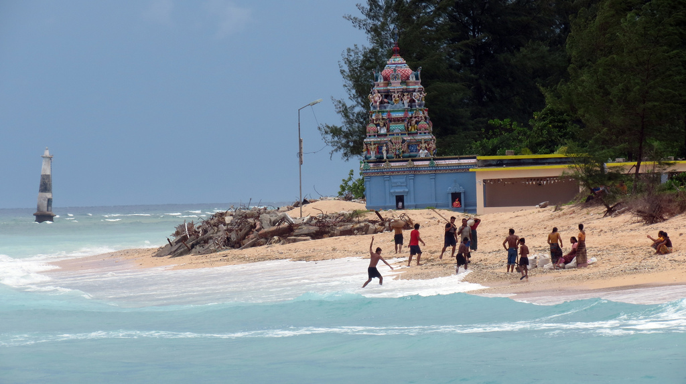
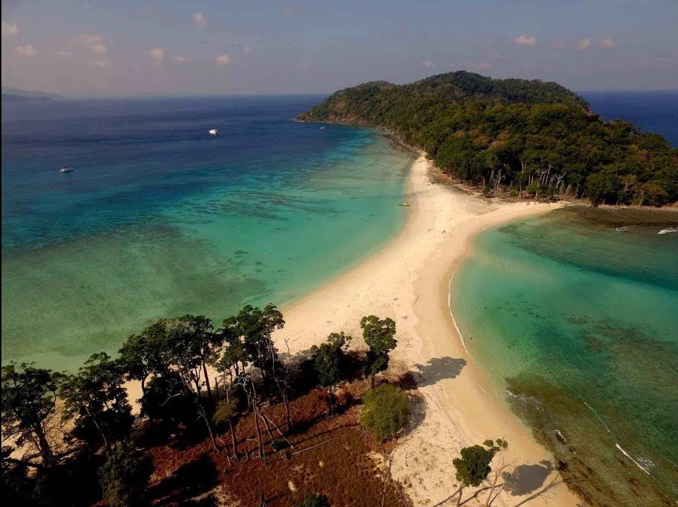
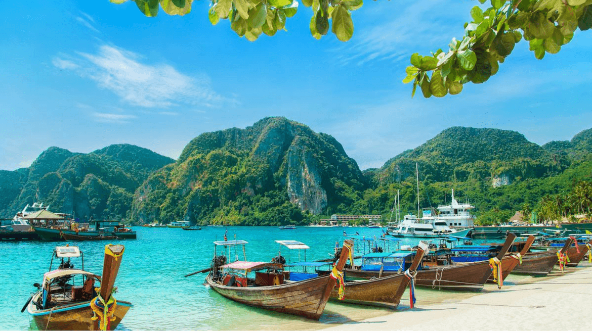

Nicobar islands comprise of 28 islands having a total area of 1841 square kilometers. The Nicobar Islands and the Andaman Islands are separated by the Ten Degree Channel. Coconut-palm, pandanus, and casuarina are found in abundance here. Exotic species of animals such as Giant Robber Crab, monkeys with the long tail and Nicobarese Pigeons are found in plenty in Great and Little Nicobar. Indira Point is the southernmost tip of India which is located in Great Nicobar Island.

Car Nicobar has an area of 126.9 square kilometers and could be reached by traveling 16 hours journey by sea from Port Blair. Car Nicobar is a flat fertile island which is covered with coconut palms and mesmerizing beaches with roaring sea all around. One of the things that makes this island unique is the Nicobari Huts which are built on stilts and the entrance is through the floor with a wooden ladder.

Katchal is one the tiniest island in the Nicobar Islands. This island was heralded the new millennium receiving the first sunrise on the year 2000, January 1st. Come here and experience the enthralling beaches of East Bay, West Bay, and Jhula.

The Great Nicobar is located at the southern end of the Nicobar Islands and it takes 50-60 hours of traveling time by sea from Port Blair. Indira Point formerly known as Pygmalion Point which is the southernmost tip of India is located here. Although the foreigners may not have access to the visit the place but Indians can go to see with prior permission. This island has the enthralling biosphere reserve area with alluring flora and fauna.